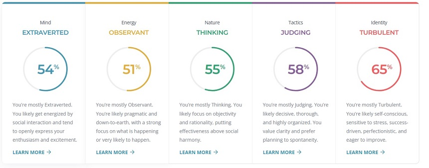
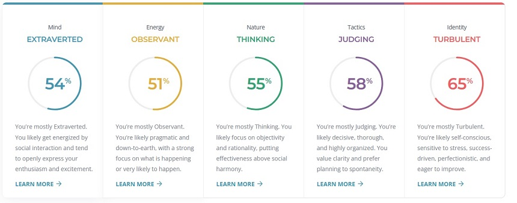

I believe the results show that I am communicative and approachable as well as observant and analytical which some will perceive as judgemental and picky, one of my weaknesses is my self-conscious behaviour which makes me aim to be an unreachable goal of perfection and being success driven at all times forgetting that sometimes failure is a way to improve.
In a team environment my results reflect that I would be pushing for perfection and constantly thinking of ways to improve things which my team may find judgmental and controlling I believe this will affect my team in wanting to work with me as they may feel their own ideas being diminished or disregarded. I also believe that my practical learning will be a problem to my team as I find it hard to detail in a theoretical format which may lead them to confusion at times.
I believe when forming a team, I should look for opposite ends of the results to ensure that all different angles of learning and observing are looked at create a stream of ideas from all accords to ensure that a project doesn’t suit just one type of individual but suits a collective of individuals. Example I would look for someone who is more theoretical to ensure that it makes sense in a way for people that aren’t practical to understand someone that is pragmatic.